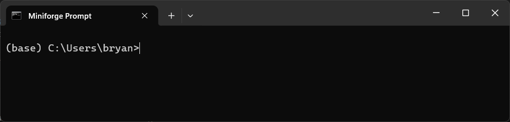

Converting nd2 files to pyramidal ome.tiff#
Instructions#
1 Install Miniforge#
Detailed instructions to set-up Miniforge on your own device are available from Mara Lampert at TU Dresden via the following link: Getting started with Miniforge and Python
Follow these instructions to install Miniforge and Python (stop before ‘Using Conda’ as you will create your own Conda environments in the steps below).
2 Create custom Conda environment for image format conversion#
2.1 Open the Miniforge Prompt (press the Windows key, type Miniforge Prompt, and press Enter)
When you open the prompt window, it should look like the below image. 
As shown in the image, you are in the (base) environment. From here we will create a custom Conda environment to convert our nd2 file to ome.tiff format.
2.2 Create the custom Conda environment nd2-ometiff and install Java 11 with openjdk=11 as required by Bioformats.
Copy the following command in the Miniforge Prompt and press Enter:
conda create -n nd2-ometiff -c conda-forge -y openjdk=11 python=3.10
This process may take a few minutes while downloading and extracting the required packages.
2.3 Run the following command to activate the environment.
conda activate nd2-ometiff
The Miniforge Prompt will change from (base) C:\... to (nd2-ometiff) C:\... or similar.
2.4 Install bioformats2raw and raw2ometiff in the active environment.
Enter the following command in the Miniforge Prompt:
conda install -c ome bioformats2raw raw2ometiff
Confirm they are installed correctly with the following prompts:
bioformats2raw --version
raw2ometiff --version
If the package is installed correctly, you should see the below output (or similar):
\path\to\raw2ometiff\bin
Version = 0.9.4
Bio-Formats version = 7.3.1
NGFF specification version = 0.4
3 Convert nd2 image to pyramidal ome.tiff format#
We can now convert our nd2 image to an ome.tiff. This process is performed in two stages as described below.
3.1 Convert nd2 image to Zarr using bioformats2raw
In the Miniforge Prompt, enter the following command:
bioformats2raw "C:\path\to\your_file.nd2" "C:\path\to\output.zarr"
A new folder with the .zarr extension will now appear in your folder.
3.2 Convert Zarr to ome.tiff using raw2ometiff
In the Miniforge Prompt, enter the following command:
raw2ometiff --compression=LZW --rgb -p "C:\path\to\output.zarr" "C:\path\to\output.ome.tif"
--compression=LZWperforms lossless LZW compression on your data. This will reduce the final image size--rgbwrites channels in RGB as per the original data
The .ome.tiff image should now appear in the designated output folder.
Note
Make sure you point the filepath correctly to your own image data. E.g, for the file image_001.nd2 in the folder C:\Users\username\images I would enter the prompts as shown below.
bioformats2raw "C:\Users\username\images\image_001.nd2" "C:\Users\username\images\image_001.zarr"
raw2ometiff --compression=LZW --rgb -p "C:\Users\username\images\image_001.zarr" "C:\Users\username\images\image_001.ome.tiff"
4 Viewing the image in QuPath#
You can now load the image in QuPath for viewing and analysis.
Note
When you convert your image format from nd2 to ome.tiff, bioformats may write the “red”, “green”, and “blue” colour channels in BGR instead of RGB order. You can fix this display issue with the workaround described below.
4.1 Open your image in QuPath
4.2 Go to View > Brightness/Contrast and the Brightness/Contrast window will open.
4.3 Manually reassign the lookup tables (LUTs) so that Channel 1 = Blue, Channel 2 = Green, Channel 3 = Red
{kind=link}
{kind=link}